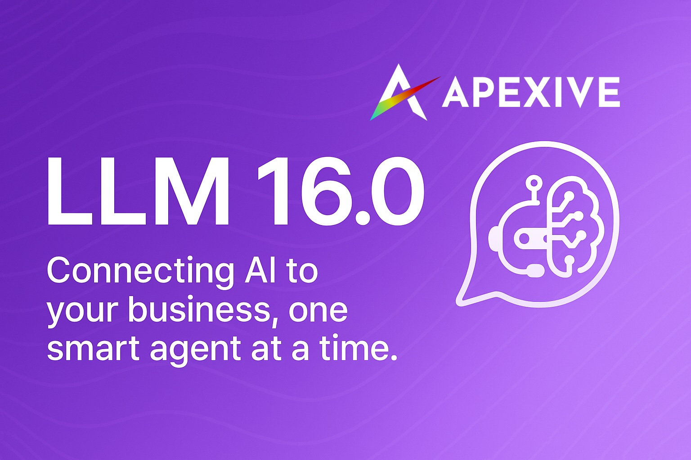

Automate and manage long-running LLM generation jobs with queueing, webhooks, and media support in Odoo.
This module enables advanced job queue management for LLM tasks, including webhook notifications and support for image, video, and other media generation directly from Odoo.

The LLM Generate Job module extends the Odoo LLM framework to manage asynchronous and long-running AI generation jobs. It provides a robust queue system, webhook integration for job completion, and supports various media types.
To configure LLM Generate Job:
| Job Type | Description | Media Support | Webhook |
|---|---|---|---|
| Text Generation | LLM-powered text completions and chat | No | Yes |
| Image/Video Generation | Queue and manage media generation jobs | Yes | Yes |
Works seamlessly with Odoo LLM, LLM Thread, and LLM Generate modules for advanced automation and delivery.
| Name | LLM Generate Job |
|---|---|
| Version | 16.0.1.0.0 |
| Category | Technical |
| License | LGPL-3 |
| Dependencies | llm, llm_thread, llm_generate, llm_mail_message_subtypes |
| External Dependencies | requests (Python) |
| Author | Apexive Solutions LLC |